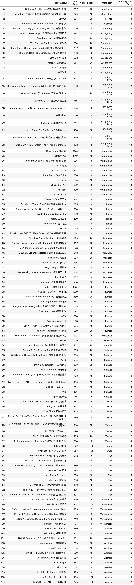

Assignment 2
Mong Kok is one of the main shopping districts in Hong Kong. Many local young people meet up as a variety of cuisines is offered in this area. Tables in this page summarize the information gathered from Open Rice which are the total number of restaurants by category, the average number of bookmarked restaurants by each category and the top 10 restaurants by each category according to their net rate (i.e., positive rating minus negative rating).
In regard to the total number of restaurants by category, there are 19 categories of restaurants in Mong Kok. Japanese restaurant is with the highest number as there are 62 Japanese restaurants in Mong Kok while some restaurants are quite special because they are the only ones to serve food in the categories that they belong to such as Mongolian, Mexican and German. By reading the above table, people could easily have an overview of restaurant distribution in Mong Kok.
 Regarding the average number of bookmarked restaurants by each category, the top 5 categories are French, Hong Kong Style, Guangdong, Mongolia and Korean. This finding could provide a reference for people when they want to know which types of restaurants are popular in Mong Kok.
Regarding the average number of bookmarked restaurants by each category, the top 5 categories are French, Hong Kong Style, Guangdong, Mongolia and Korean. This finding could provide a reference for people when they want to know which types of restaurants are popular in Mong Kok.

As for the top 10 restaurants by each category, restaurants in each category are ranked by their net rate which can better reflect their popularity in which restaurants with the highest net rate in each category are Outback Steakhouse (Australian), Ming Kee (Chiu Chow), Sky726 (French), Beerliner German Bar & Restaurant (German), Paradise Dynasty (Guangdong), E Pot (Hong Kong Style), URBAN Cafe (International), Station 3 Cafe (Italian), Yahataya Shabu Shabu (Japanese), Outdark (Korean), Kedai Kopi Semua Semua (Malaysian), Happy Lamb Hot Pot (Mongolian), Cheng Du Old Pier Hot Pot (Sichuan), Seam Eett Taiwan Noodles (Taiwan), Aroy Khao Man Gai (Thai), NAM VIET NAM CAFÉ (Vietnamese), Bellevue Bar and Grill (Western) and TamJai SamGor (Yunnan). These rankings may help people to make decisions easier when they are selecting restaurants.
It is hoped that the above findings could provide a big picture of restaurants in Mong Kok and then narrow down the scope so as to help people to choose their target restaurants more efficiently.
If you are interested in knowing more about the process of obtaining the above results, please click here.